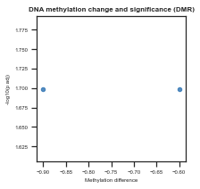

Notebook¶
Example merging DMCs and DMRs¶
This notebook provides an example on merging files from Methylkit (DMC’s) and DMRs from Methylsig.
[1]:
import pandas as pd
from sciutil import SciUtil
from scidmg import SciDMG
import os
data_dir = f'{os.path.dirname(os.path.realpath("."))}/../../tests/data/'
dmr_file = f'{data_dir}methylSig_prom.csv'
dmc_file = f'{data_dir}methylKit_DMC.csv'
percent_meth_file = f'{data_dir}methylKit_percentMeth.csv'
u = SciUtil()
Inspect files¶
Just to give you an idea of what the files as input are we print out the head of each input file.
Note that each file has the same column name for the gene symbol external_gene_name. This will be used to merge the files.
[2]:
u.dp(['DMR file header:'])
print(pd.read_csv(dmr_file))
u.dp(['DMC file header:'])
print(pd.read_csv(dmc_file))
u.dp(['Percentage methylation file header:'])
print(pd.read_csv(percent_meth_file))
--------------------------------------------------------------------------------
DMR file header:
--------------------------------------------------------------------------------
idx seqnames start end gene_idx meth_diff uid pvalue fdr \
0 1 chr1 10 100 1 -0.6 dmr_1 0.001 0.010
1 2 chr1 123 190 2 -0.1 dmr_2 0.010 0.300
2 3 chr1 3 200 3 0.8 dmr_3 0.010 0.010
3 4 chr1 123 312 4 -0.1 dmr_4 0.010 0.010
4 5 chr1 123 190 2 -0.1 dmr_5 0.010 0.001
5 6 chr1 123 190 2 0.3 dmr_6 0.010 0.010
6 7 chr1 123 190 2 -0.2 dmr_7 0.010 0.010
7 3 chr1 3 200 3 -0.9 dmr_10 0.010 0.010
ensembl_gene_id external_gene_name chromosome_name start_position \
0 ENSG00000278267 AC114488.2 chr1 1
1 ENSG00000116273 PHF13 chrX 2
2 ENSG00000249087 ZNF436-AS1 chr3 3
3 ENSG00000278267 AC114488.2 chr1 1
4 ENSG00000116273 HOXA1 chr4 2
5 ENSG00000116273 HOXA1 chr4 2
6 ENSG00000116273 HOXB9 chr8 2
7 ENSG00000249087 ZNF436-AS1 chr3 3
end_position strand
0 30 -1
1 12 1
2 431 1
3 231 1
4 12 1
5 12 1
6 12 1
7 431 1
--------------------------------------------------------------------------------
DMC file header:
--------------------------------------------------------------------------------
idx chr start end gene_idx meth.diff uid pvalue qvalue \
0 1 chr1 1 1 1 -0.6 dmc_1 0.001 0.010
1 2 chrX 1 1 2 -0.1 dmc_2 0.010 0.300
2 3 chr3 1 1 3 0.1 dmc_3 0.010 0.010
3 4 chr1 1 1 4 -0.1 dmc_4 0.010 0.010
4 5 chr1 1 1 5 -0.3 dmc_5 0.010 0.010
5 6 chr1 1 1 6 0.0 dmc_6 0.010 0.010
6 7 chr1 1 1 7 2.0 dmc_7 0.010 0.010
7 5 chr1 1 1 9 -0.1 dmc_8 0.010 0.001
8 3 chr3 1 1 3 -0.7 dmc_10 0.010 0.010
ensembl_gene_id external_gene_name chromosome_name start_position \
0 ENSG00000278267 AC114488.2 chr1 1
1 ENSG00000116273 PHF13 chrX 2
2 ENSG00000249087 ZNF436-AS1 chr3 3
3 ENSG00000278267 AC114488.2 chr1 1
4 ENSG00000278267 AC114488.2 chr1 2
5 ENSG00000278267 AC114488.2 chr1 3
6 ENSG00000278267 AC114488.2 chr1 4
7 ENSG00000116273 HOXA1 chr4 2
8 ENSG00000249087 ZNF436-AS1 chr3 3
end_position strand
0 1 -1
1 2 1
2 3 1
3 1 1
4 3 1
5 3 1
6 4 1
7 12 1
8 3 1
--------------------------------------------------------------------------------
Percentage methylation file header:
--------------------------------------------------------------------------------
idx chr start end gene_idx uid WT_1 WT_2 WT_3 KO_1 KO_2 \
0 1 chr1 1 1 1 dmc_1 0.33 0.18 0.53 0.11 0.59
1 2 chrX 1 1 2 dmc_2 0.12 0.47 0.22 0.12 0.42
2 3 chr3 1 1 3 dmc_3 0.06 0.21 0.43 0.04 0.39
3 4 chr1 1 1 4 dmc_4 0.72 0.75 0.11 0.76 0.17
4 5 chr1 1 1 5 dmc_5 0.91 0.11 0.24 0.12 0.49
5 6 chr1 1 1 6 dmc_6 0.75 0.84 0.59 0.33 0.44
6 7 chr1 1 1 7 dmc_7 0.98 0.90 0.64 0.18 0.06
7 7 chr1 1 1 7 dmc_8 0.98 0.90 0.64 0.18 0.06
8 3 chr3 1 1 3 dmc_10 0.06 0.21 0.43 0.04 0.39
KO_3 ensembl_gene_id external_gene_name chromosome_name start_position \
0 0.50 ENSG00000278267 AC114488.2 chr1 1
1 0.86 ENSG00000116273 PHF13 chrX 2
2 0.25 ENSG00000249087 ZNF436-AS1 chr3 3
3 0.89 ENSG00000278267 AC114488.2 chr1 1
4 0.23 ENSG00000278267 AC114488.2 chr1 2
5 0.73 ENSG00000278267 AC114488.2 chr1 3
6 0.51 ENSG00000278267 AC114488.2 chr1 4
7 0.51 ENSG00000116273 HOXA1 chr4 2
8 0.25 ENSG00000249087 ZNF436-AS1 chr3 3
end_position strand
0 1 -1
1 2 1
2 3 1
3 1 1
4 3 1
5 3 1
6 4 1
7 12 1
8 3 1
Override the default parameters¶
Here we just show how some of the parameters can be overridden.
For example, we have made this a bit stricter than the defaults and required a cutoff for DMC’s of 0.05.
We also make the DMRs have at least 70% of DMCs in agreement of direction.
[3]:
dmg = SciDMG(dmr_file, percent_meth_file, dmc_file,
dmc_methdiff="meth.diff", dmc_padj="qvalue", dmc_uid="uid", dmc_padj_cutoff=0.05,
dmr_methdiff="meth_diff", dmr_padj="fdr", dmr_uid="uid", dmr_padj_cutoff=0.1,
min_perc_agreement=0.7, min_meth_diff=0.1, plot=True
)
dmg.run()
dmg.print_stats()
--------------------------------------------------------------------------------
Please run dmg.run() before plotting the volcanos.
--------------------------------------------------------------------------------
--------------------------------------------------------------------------------
Please run dmg.run() before plotting the volcanos.
--------------------------------------------------------------------------------
--------------------------------------------------------------------------------
WARNING: Running merge_dmc_perc_meth which assumes that you have run the DMC analysis using MethylKit.
--------------------------------------------------------------------------------
--------------------------------------------------------------------------------
Length of all merged methylation data: 16
--------------------------------------------------------------------------------
--------------------------------------------------------------------------------
Length of merged methylation data grouped by region: 6
--------------------------------------------------------------------------------
--------------------------------------------------------------------------------
Number of CpGs to keep based on the regions: 2
--------------------------------------------------------------------------------
--------------------------------------------------------------------------------
Length of filtered methylation dataframe: 3
Number of genes with Methylation: 2
--------------------------------------------------------------------------------
--------------------------------------------------------------------------------
Dropping any genes with disagreeing DMRs: 0
--------------------------------------------------------------------------------
--------------------------------------------------------------------------------
Length of dataframe filtered to only keep top DMC mapped to genes: 2
--------------------------------------------------------------------------------
--------------------------------------------------------------------------------
Printing stats:
--------------------------------------------------------------------------------
Length grouped by DMRs 6
Number of CpGs to keep from grouped DMRs 2
Length of merged DMR and DMC 16
Length grouped by Genes 2
Number of Genes with DMRs that disagree in direction 0
Plot volcanos¶
We may want to inspect our files as well, so we can plkot a volcano of the DMcs and the DMRs.
[4]:
dmg.plot_dmc_volcano()
dmg.plot_dmr_volcano()
--------------------------------------------------------------------------------
No offset was provided, setting offset to be smallest value recorded in dataset: 0.01
--------------------------------------------------------------------------------
--------------------------------------------------------------------------------
No offset was provided, setting offset to be smallest value recorded in dataset: 0.01
--------------------------------------------------------------------------------
